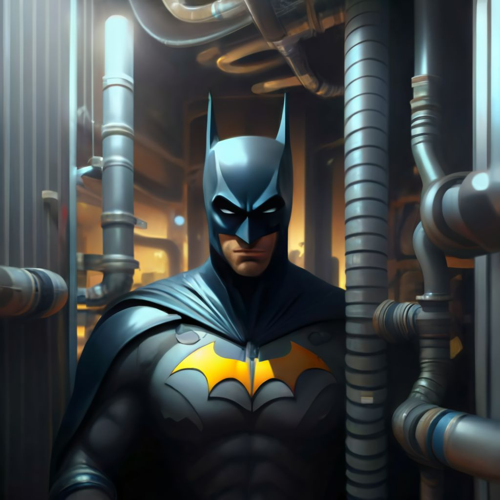
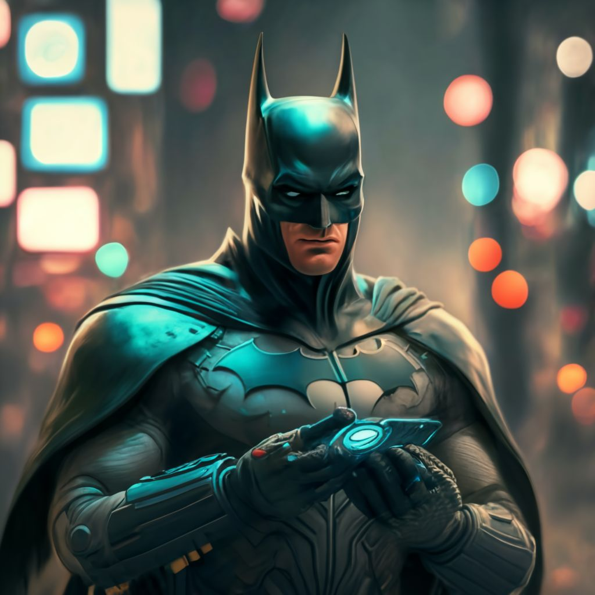

Batman decidió que detener a Dos Caras en el banco central era la prioridad. La posibilidad de un robo masivo y el peligro inmediato para los empleados del banco pesaban sobre su conciencia. Activando los propulsores de su Batimóvil, se lanzó a través de las oscuras calles de Gotham, cada segundo contando mientras se acercaba al lugar del caos.
Al llegar, observó una escena de pura anarquía. Dos Caras y sus secuaces habían tomado el control total del banco, y los gritos de los rehenes resonaban en el aire frío de la noche. Sin perder tiempo, Batman utilizó su gancho para ascender al techo del edificio, buscando una entrada silenciosa para no alertar a los criminales de su presencia.
Una vez dentro, se movió con sigilo, utilizando las sombras a su favor. Sabía que enfrentarse directamente a Dos Caras y su banda armada era arriesgado; necesitaba una estrategia que pudiera neutralizar a los enemigos sin poner en peligro a los rehenes.
Justo cuando estaba a punto de desactivar las cámaras de seguridad, Batman se encontró con una decisión crítica:
Opción 1: Infiltrarse en la sala principal mediante los conductos de ventilación para sorprender a Dos Caras y sus secuaces desde arriba.
Opción 2: Utilizar un dispositivo de desorientación sónico para incapacitar temporalmente a los criminales, permitiéndole liberar a los rehenes antes de enfrentarse directamente a Dos Caras. Sin embargo, esto podría alertar a Dos Caras de su presencia inmediatamente, precipitando un enfrentamiento directo.
¿Cuál debería ser el próximo movimiento de Batman?
|
Opción 1
 |
Opcion 2
 |